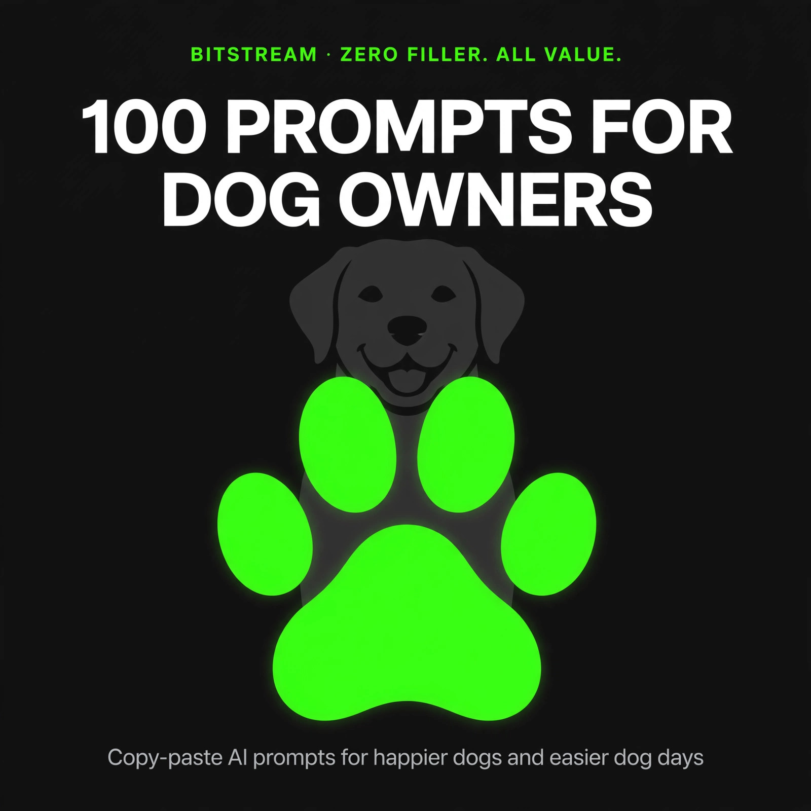

BITSTREAM · ZERO FILLER. ALL VALUE.
100 Prompts
for Dog Owners
100 copy-paste prompts for happier dogs and easier dog days.
Open a free AI tool, paste, fill in the blanks, done.
ESSENTIAL PACK · $7.99
How to use this pack (60 seconds)
- Open a free AI tool — ChatGPT (chatgpt.com), Claude (claude.ai), or Gemini (gemini.google.com). No account tricks, no paid plan needed.
- Copy any prompt and replace the [BRACKETED] parts with your details.
- Be specific. Your dog's breed, age, weight, and quirks — specifics in, quality out. "My dog is chewing stuff" gets a generic list. "My 8-month-old lab mix is chewing baseboards while I'm at work" gets a plan.
- Treat the first answer as a draft. Reply with "make it simpler," "what do I buy first," or "give me a checklist" until it's right.
- AI is a helper, not a vet. Use these prompts to prepare, organize, and learn — then verify anything about health, medication, or emergencies with your actual veterinarian.
Rule 1 — Describe your dog like a vet would want. Breed (or best guess), age, weight, and the exact behavior you're seeing matter more than the prompt wording. "8-month-old, 45-pound lab mix, barks at the mail carrier every morning" gets you usable results.
Rule 2 — AI plans, the vet decides. These prompts organize your questions, prep for vet visits, and summarize what you read — but diagnosis, dosing, and treatment calls belong to a qualified professional. When in doubt, call your vet or an emergency clinic first.
Rule 3 — Train the human too. Every dog-training prompt works better when everyone in the house does the same thing. Pick one approach per problem and make sure all humans are on board.
1 · Picking the Right Dog
Breed, breeder, or rescue — match the dog to your actual life, not the one in your head.
PROMPT 01
Breed match for my lifestyle
I want a dog. My life: [live in an apartment, work from home 3 days a week, first-time owner, no yard]. Recommend 5 breeds or mixes that fit, and 3 popular breeds I should AVOID and why. Be honest about grooming and exercise needs.
PROMPT 02
Puppy vs. adult rescue decision
Help me decide between a puppy and an adult rescue dog. My situation: [two kids under 8, one works full-time outside the home, house with a small fenced yard]. Give me a real comparison: time, cost, training effort, and risk for each option.
PROMPT 03
Questions for a breeder
I'm visiting a breeder of [Golden Retrievers] this weekend. Give me 15 questions to ask — health testing, the parents, how puppies are raised, what a GOOD breeder's answers sound like, and the red-flag answers that mean I walk away.
PROMPT 04
Questions for a rescue or shelter
I'm looking at a [3-year-old pit bull mix] at a local rescue. Give me 12 questions to ask the shelter staff: what they know about the dog's history, behavior testing, health, and what they can't tell me. Include what paperwork I should get before I sign.
PROMPT 05
First-year cost estimate
Estimate my first-year cost for a [medium-size puppy, about 30 lbs grown] in [the Midwest US]. Break it down: adoption/purchase, vet visits and vaccines, spay/neuter, food, crate and supplies, training classes, pet insurance. Give me the realistic total and the cheap-outs that backfire.
PROMPT 06
Puppy-proofing checklist
I'm bringing home an [8-week-old puppy] in two weeks. Give me a room-by-room puppy-proofing checklist: what's dangerous, what needs to move, and what to buy now vs. what can wait. Assume a normal house, no garage-only solutions.
PROMPT 07
Essential first-week supplies
List everything I need for a puppy's first week home: [9-week-old beagle, crate in the bedroom]. Split into: must-have before day one, nice-to-have this month, and stuff stores push that puppies don't actually need. Include rough prices.
PROMPT 08
Name brainstorm
Help me name my new dog: [female, 4 months old, chocolate lab mix, playful and goofy]. Give me 20 name ideas grouped by style (classic, fun, nature-inspired), then pick your top 3. Note which names are easy to call out at the park and which sound too much like common commands.
PROMPT 09
Introducing a dog to your kids
We're adopting a [2-year-old husky mix] and have kids ages [5 and 9]. Write a step-by-step plan for the first 48 hours: the introduction, ground rules for the kids, how to read the dog's stress signals, and what "going well" vs. "call the trainer" looks like.
PROMPT 10
Introducing a new dog to your current dog
We have a [6-year-old male corgi, a bit territorial] and are adopting a [1-year-old female beagle]. Give me a neutral-territory introduction plan for day one, then a two-week plan for feeding, sleeping, and playtime so the old dog doesn't feel replaced.
PROMPT 11
Lease and insurance dog rules
My apartment lease has breed and weight restrictions. I want a [45-pound staffy mix]. Help me: write a polite email asking my landlord for an exception, list what renter's insurance covers for dog owners, and what to do if my breed is on my insurer's restricted list.
PROMPT 12
First 72 hours at home plan
My new rescue dog arrives [Friday evening]: [adult, nervous, shut down in the shelter]. Build me an hour-by-hour plan for the first 72 hours: decompression, first walk, first feeding, crate setup, when to invite people over (hint: don't), and the signs the dog is settling in.
2 · Puppy Training Basics
The foundation commands, the crate, and house training — get these right in the first month.
PROMPT 13
Crate training plan
Write a 7-day crate training plan for my [10-week-old puppy]. The crate is in [the bedroom]. Cover: making the crate appealing, first nights, how long to leave the puppy alone at this age, and what to do about whining — including the difference between "needs to pee" whining and "protest" whining.
PROMPT 14
House training schedule
Build a house training schedule for my [9-week-old puppy]. I work [from home]. Give me: potty break times for the first two weeks, how long a puppy this age can hold it, what to do after an accident (and what NOT to do), and the milestones that mean we're making progress.
PROMPT 15
Teach sit, stay, and come
Teach me how to train my [4-month-old puppy] to sit, stay, and come using positive reinforcement. Give me step-by-step instructions for each command, how many minutes per session, how many sessions per day, and the exact order to teach them. Keep it simple — I'm a first-timer.
PROMPT 16
Leash walking without the tug-of-war
My [5-month-old lab mix] pulls hard on walks. Give me a 3-week loose-leash training plan: the equipment I need (harness type?), the daily drill with exact steps, what to do when the puppy pulls mid-walk, and how long each session should be.
PROMPT 17
Socialization window checklist
My puppy is [11 weeks old] and I know the socialization window closes around 16 weeks. Give me a checklist of experiences to cover before then: people, dogs, sounds, surfaces, and environments — plus how to do it safely before vaccinations are complete, and what "overwhelmed" looks like.
PROMPT 18
Bite inhibition for mouthy puppies
My [10-week-old puppy] bites my hands and sleeves constantly. Give me a bite-inhibition plan: what to do in the moment (step by step), what to do instead of yelling, which toys actually redirect, and the timeline — when does this phase normally end?
PROMPT 19
First puppy class: what to expect
I'm signing my [14-week-old puppy] up for puppy class. Help me choose a good one: what questions to ask the trainer, what a good class looks like vs. a bad one, what to bring to the first session, and how to practice between classes without overtraining.
PROMPT 20
Daily puppy routine builder
Build a full daily routine for my [12-week-old puppy]. I leave the house [9am to 5pm, with a midday dog walker]. Include: wake-up, meals, potty breaks, training minutes, play, nap times (enforced naps?), and bedtime. Be realistic about what a puppy can handle.
PROMPT 21
Leave-it and drop-it commands
Teach me to train "leave it" and "drop it" with my [6-month-old rescue who grabs food off the ground]. Step-by-step for each command, starting inside with zero distractions and building up to real-world temptations. Include the safety reason these matter (chicken bones, etc.).
PROMPT 22
Choosing treats and training rewards
What treats should I use for training my [small, food-motivated puppy]? Give me: high-value vs. everyday training treats, store-bought picks by price tier, 5 homemade options, how tiny a treat should be, and how to phase treats out without the behavior falling apart.
PROMPT 23
Clicker training quickstart
I want to try clicker training with my [adult dog, new to training]. Explain it like I'm a beginner: how to "charge" the clicker, 3 first exercises to try, the timing rule that matters most, and the common mistakes that make the clicker useless.
PROMPT 24
Puppy class graduation: what's next
My [6-month-old puppy] just finished basic puppy class. She knows sit, down, stay, and come (indoors). Give me a 4-week intermediate plan: which skills to level up, how to add real-world distractions, whether I need a second class, and what's realistic for her age.
PROMPT 25
Training when you're short on time
I can only train my [5-month-old puppy] for [15 minutes a day]. Design a micro-training plan: the 3 highest-impact exercises, how to work training into normal daily moments (meals, walks, doorways), and how to track progress so I know it's working.
3 · Behavior Troubleshooting
Barking, chewing, jumping, anxiety — figure out the "why" first, then fix it.
PROMPT 26
Barking at everything: find the trigger
My dog barks constantly: [at the window when people pass, on walks at other dogs, in the yard at squirrels]. Help me figure out the pattern — what the triggers have in common, what the dog is actually communicating, and a 4-week plan to reduce each type of barking. Dog: [2-year-old terrier mix].
PROMPT 27
Separation anxiety plan
My [3-year-old rescue] panics when I leave — [howling, chewing the door frame, accidents]. Give me a desensitization plan I can do over 4 weeks: starting exercises, how to build up alone time minute by minute, what to set up in the room, and the signs I should call a veterinary behaviorist instead of DIY-ing.
PROMPT 28
Chewing furniture and baseboards
My [8-month-old lab] destroys [couch cushions and baseboards] when I'm at work. Help me diagnose: boredom, anxiety, or teething? Then give me a fix-it plan: confinement setup, the chew toys that actually satisfy heavy chewers, exercise changes, and what to put on the baseboards now.
PROMPT 29
Jumping on guests
My [1-year-old, 60-pound boxer] jumps on everyone who walks in. Give me a greeting protocol: what to do BEFORE guests arrive, the exact script for guests ("do this, don't do that"), the training drill to practice daily, and how long this takes to fix.
PROMPT 30
Dog won't come when called (recall fix)
My dog's recall is terrible — [comes in the house, ignores me at the park, bolts after squirrels]. Dog: [2-year-old husky]. Build me a recall retraining plan from scratch: new cue word strategy, the long-line method, jackpot rewards, and how to handle it when he blows me off.
PROMPT 31
Resource guarding the food bowl
My [adult rescue, 50 lbs] growls when I walk near his food bowl. Give me a safe management-and-training plan: what to do TODAY to stay safe, the trade-up game explained step by step, what never to do (punishment makes this worse), and when this is a call-a-professional situation. Safety first.
PROMPT 32
Counter surfing thief
My [tall hound mix] steals food off the kitchen counter constantly. Give me a management plan: how to make the counters boring, the "place" command drill to teach an alternative, what the whole household must agree on, and how long until the habit fades.
PROMPT 33
Pulling on leash as an adult dog
My [3-year-old, 70-pound shepherd mix] drags me down the street. Walks are miserable. Give me an adult-dog loose-leash reboot: equipment check (front-clip harness? head halter?), the stop-and-go method vs. the turn-around method, and a realistic timeline for a strong, untrained puller.
PROMPT 34
Digging up the yard
My dog is excavating my backyard: [digs near the fence, mostly in the afternoon]. Dog: [1-year-old terrier]. Help me figure out the motivation (boredom? heat? escape?), then give me fixes: a legal dig zone setup, exercise changes, and how to protect the fence line.
PROMPT 35
Scared of thunder and fireworks
My [5-year-old dog] panics during thunderstorms: [shaking, hiding in the bathroom, won't eat]. Give me a storm-anxiety plan: what to do during a storm right now, desensitization training for between storms, whether calming products are worth trying, and when to ask the vet about medication.
PROMPT 36
Reactivity toward other dogs
My [2-year-old rescue] lunges and barks at other dogs on walks but is fine at daycare. Help me understand what's happening (leash frustration vs. fear), then give me a plan: threshold distance, the "look at that" game, emergency U-turn technique, and what gear keeps everyone safe.
PROMPT 37
Nighttime restlessness
My [4-year-old dog] has started [pacing and whining at 2am] for the past week. Help me troubleshoot: what questions should I ask myself (routine changes? pain? needs?), what to track for 3 nights to spot a pattern, and when restlessness means a vet visit.
PROMPT 38
When to call a professional trainer
My dog's issues: [describe the behaviors]. Help me decide: what I can reasonably fix myself with consistency, what needs a certified trainer (CPDT-KA?), and what's actually a veterinary behaviorist situation. Include what a good trainer's methods look like and red flags that mean leave.
4 · Health, Vet Visits & Emergencies
Use AI to prepare, organize, and understand — your vet makes the medical calls.
PROMPT 39
First vet visit prep
I'm taking my [new 10-week-old puppy] to the vet for the first time on [date]. Help me prepare: what records to bring, 15 questions to ask (vaccines, deworming, microchip, diet), what the exam will include, and what paperwork I should leave with.
PROMPT 40
Vaccination schedule explained
Explain my puppy's vaccination schedule in plain English: puppy is [9 weeks old], first shots [done at the breeder]. What shots come next and when, which are legally required where I live in [state], what's safe before the series is complete, and what "core vs. lifestyle" vaccines mean for [a dog who'll go to daycare].
PROMPT 41
Symptom journal for the vet
My dog has been [vomiting occasionally and refusing breakfast for 3 days]. I can't see the vet until [Thursday]. Help me keep a symptom journal: exactly what to record and when (appetite, energy, stool, vomiting details), what notes help a vet most, and the warning signs that mean go to the emergency clinic NOW instead of waiting.
PROMPT 42
Emergency: is this an ER visit?
My dog is [describe exactly what you're seeing: breathing, consciousness, bleeding, swelling, what happened]. Dog: [breed, age, weight]. Help me decide: emergency clinic right now, call my vet in the morning, or monitor at home? Give me the red-flag signs for this specific situation, what to do while I get to the car, and remind me — I'm calling the vet either way for anything serious.
PROMPT 43
Poison and toxin quick-reference
My dog may have eaten [chocolate / grapes / a sock / an unknown pill — describe it]. Dog weighs [X lbs], it happened [30 minutes ago]. Give me: what to do in the first 10 minutes, the ASPCA Poison Control number and fee, what info the vet will need, what NOT to do (like inducing vomiting without being told), and how to prevent this next time.
PROMPT 44
Spay/neuter decision guide
My vet recommends spaying/neutering my [6-month-old, 40-pound mixed-breed]. Help me understand: the pros and cons of doing it now vs. waiting, what the surgery day looks like, recovery care for the first 14 days, cone alternatives, and what questions to ask the vet about timing for my specific dog.
PROMPT 45
Decode the vet bill
My vet gave me an estimate for [a dental cleaning]: [paste the itemized estimate]. Explain each line in plain English, flag anything that's optional vs. necessary, tell me what questions to ask before approving, and how to ask about payment plans without being awkward.
PROMPT 46
Medication tracker
My dog was prescribed [medication name, dose, frequency] for [condition]. Build me a medication tracker: a simple daily schedule, what "give with food" actually means, the common side effects to watch for, what to do if I miss a dose, and when to call the vet vs. finishing the course.
PROMPT 47
Allergy detective
My dog has been [scratching and chewing his paws for weeks]. Dog: [breed, age], currently eating [brand and protein]. Help me organize an allergy investigation for my vet visit: environmental vs. food clues, what to track for 2 weeks (a simple log), what NOT to change before the appointment, and questions to ask about testing.
PROMPT 48
Weight loss plan for a chubby dog
My vet says my [7-year-old lab, 95 lbs, should be about 80] needs to lose weight. Build a safe weight-loss plan: how to measure food (cups vs. a scale), treat budget rules, an exercise ramp-up that won't hurt his joints, how fast is safe, and how to track progress. I'll confirm all of this with my vet before starting.
PROMPT 49
Second opinion: questions to ask
My vet recommended [a $3,000 knee surgery] for my [4-year-old dog]. I want a second opinion. Give me: what records and X-rays to request from my current vet, 10 questions to ask the second vet, how to compare the two recommendations, and how to tell my current vet without burning the relationship.
PROMPT 50
Pet insurance: worth it?
Should I get pet insurance for my [1-year-old healthy mixed breed, 35 lbs]? Compare the math: typical monthly premiums vs. common emergency costs (foreign body surgery, ACL repair, ER visits), what pre-existing condition clauses actually exclude, and the 3 questions that reveal whether a policy is good.
PROMPT 51
After-hours emergency plan
Help me build a dog emergency plan for my household: nearest 24-hour emergency vet (what info to save), what goes in a pet first-aid kit, who my backup person is if I'm traveling, where the vet records live, and a one-page sheet I can stick on the fridge for a pet sitter.
5 · Nutrition & Feeding
What to feed, how much, and how to switch without the stomach drama.
PROMPT 52
Pick the right dog food
Help me choose a dog food for my [2-year-old, 50-pound active mixed breed]. My budget is [$60/month]. Explain: what to look for on the label (AAFCO statement, protein sources), the grain-free controversy in plain English, and 3 specific foods in my budget worth considering — plus what to avoid.
PROMPT 53
How much to feed (portions)
My dog is [3 years old, 45 lbs, moderately active] and eats [brand name] kibble. The bag says one thing, my vet says another. Help me figure out the right daily portion: calculate from calories per cup, adjust for activity and body condition, and tell me how to measure accurately. I'll confirm with my vet.
PROMPT 54
Switch foods without stomach upset
I'm switching my [adult dog] from [old brand] to [new brand]. Give me a 10-day transition schedule with exact ratios, what normal adjustment looks like vs. "this food isn't working," and how long to give it before judging the new food.
PROMPT 55
Puppy feeding schedule
My puppy is [12 weeks old, will be about 40 lbs grown]. Build a feeding plan: how many meals per day at this age and when to drop to two, puppy food vs. all-life-stages, how much per meal, and when to switch to adult food. Keep it simple and vet-approved in spirit.
PROMPT 56
Safe human foods and toxic ones
My dog begs at the table and I feel guilty. Give me two lists: 15 human foods that are genuinely safe for dogs (with portion guidance) and 15 that are toxic or dangerous — with WHY each dangerous one is a problem. Dog: [30 lbs]. Include what to do if he grabs something from the danger list.
PROMPT 57
Slow down a speed eater
My dog inhales food in [under 60 seconds] and sometimes vomits after. Dog: [deep-chested breed, 60 lbs]. Give me solutions ranked by effectiveness: slow-feeder bowls, puzzle feeders, hand-feeding games, portion splitting — and explain the bloat risk for deep-chested dogs in plain terms so I take this seriously.
PROMPT 58
Homemade dog food: is it realistic?
I want to cook for my [healthy adult dog, 40 lbs]. Be honest: what homemade feeding requires to be nutritionally complete (it's more than chicken and rice), the nutrients most DIY diets miss, what a vet nutritionist consult costs and what it gets me, and 3 balanced starter recipes I can discuss with my vet.
PROMPT 59
Treat budget and healthy treats
I train my dog daily and the treats are adding up — in money and calories. Dog: [50 lbs, needs to stay lean]. Give me: the 10% treat rule explained, 10 healthy low-calorie treat options (store-bought and homemade), and how to use part of his regular kibble as training treats.
PROMPT 60
Picky eater troubleshooting
My [2-year-old dog] has started [skipping breakfast but eating dinner, for about a week]. Help me troubleshoot: the questions to ask (treats? table scraps? stress? illness?), 5 things to try before assuming it's the food, and the signs that picky eating means a vet visit.
PROMPT 61
Raw diet: honest breakdown
I'm curious about raw feeding for my [healthy adult dog]. Give me an honest, balanced breakdown: what proponents claim, what vets and research actually say, the real risks (bacteria, bones, nutritional gaps), the real costs and time, and the questions to ask my vet before deciding.
PROMPT 62
Supplements: what actually helps
My dog is [8 years old, starting to slow down on stairs]. The pet store wall of supplements is overwhelming. Tell me: which supplements have real evidence behind them (joint, skin, etc.), which are mostly marketing, how to pick a reputable brand, and what to ask my vet before adding anything.
PROMPT 63
Feeding multiple dogs peacefully
I have [two dogs: a 6-year-old who eats slowly and a 1-year-old who steals food]. Mealtimes are chaos. Give me a feeding management plan: separate or together, bowl placement, timing rules, how to handle the food thief, and what to do about different diets (one needs weight management).
6 · Grooming & Home Care
Nails, baths, shedding, teeth — the maintenance that keeps a dog comfortable.
PROMPT 64
Nail trimming at home
I want to trim my dog's nails myself. Dog: [40 lbs, dark nails, hates having paws touched]. Give me a step-by-step: the tools I need (clipper type?), how to find the quick on dark nails, the desensitization plan for a paw-shy dog, how much to take off, and what to do if I cut too short.
PROMPT 65
Bath day without the fight
My [60-pound dog] hates baths. Give me a low-stress bath routine: where to bathe a big dog at home, water temperature, what shampoo is actually safe (and what's not), the step-by-step order, ear-drying tips, and how often a [short-haired, mostly indoor] dog really needs a bath.
PROMPT 66
Shedding control plan
My [husky mix] is blowing her coat and my house looks like a snow globe. Give me a shedding battle plan: the right brush type for a double coat, how often to brush during blowout vs. normal times, whether de-shedding tools are safe, bath timing, and the diet factors that actually affect shedding.
PROMPT 67
Brushing a long-haired dog
My [doodle with a wavy coat] is starting to mat. Teach me: the right brush and comb combo, how to brush in layers to the skin (line brushing), how to work out small mats safely vs. when to cut, and a weekly brushing schedule that prevents the groomer from having to shave him.
PROMPT 68
Teeth cleaning routine
My vet says my [5-year-old dog] needs better dental care. Give me a realistic plan: how to start brushing a dog's teeth (step by step for a resistant dog), which toothpaste and brush type to buy, dental chews worth the money, and the signs that mean a professional cleaning is needed.
PROMPT 69
Ear cleaning guide
My [floppy-eared beagle] gets ear infections. Show me: how to clean ears safely at home (solution type, technique, how deep is too deep), how often for a floppy-eared dog, what healthy ears look and smell like, and the warning signs of an infection that need a vet.
PROMPT 70
Flea and tick prevention plan
I live in [Florida, year-round flea and tick country] with a [35-pound dog]. Help me choose prevention: compare topicals, chewables, and collars honestly (effectiveness, cost, safety), what to do if I find a tick, how to check after hikes, and what to ask my vet about heartworm prevention too.
PROMPT 71
Skunked! Emergency bath plan
My dog just got sprayed by a skunk. Give me the emergency de-skunking plan: the exact baking soda / dish soap / hydrogen peroxide recipe with ratios for a [50-pound dog], what to do first vs. what makes it worse (water first is wrong — explain), how to protect eyes, and when the smell means a vet visit.
PROMPT 72
Groomer vs. DIY: the math
My [poodle mix] needs grooming every 6-8 weeks at [$75 a visit]. Help me decide: what grooming I can realistically DIY (with startup costs for clippers, table, etc.) vs. what to leave to a pro, the learning curve for a home haircut, and the break-even math.
PROMPT 73
Seasonal paw care
I live in [a city with harsh winters / a hot climate — pick one]. Give me a paw-care plan for my [active dog who walks daily]: salt and ice protection (booties? wax?), hot pavement rules (the 5-second test), what cracked pads mean, and a simple paw balm recipe I can make.
PROMPT 74
Cooperative care training
My dog [panics at the vet and groomer — shaking, trying to flee]. Teach me cooperative care: how to train a "chin rest" and "paw offer" at home, how to build up to handling (ears, paws, mouth), and how to talk to my vet about fear-free visits.
PROMPT 75
Dog-proofing for muddy paws
My dog tracks mud through the house every time it rains. Dog: [big, active, uses a dog door]. Give me a mud-management system: entryway setup, paw-washing station options, washable rug picks, and a 2-minute post-walk routine that actually works.
7 · Travel & Boarding
Road trips, flights, sitters, and kennels — leave home without the guilt spiral.
PROMPT 76
Road trip with your dog
I'm driving [8 hours] with my [50-pound dog] next month. Give me a road-trip plan: car setup (crate vs. harness vs. barrier — what's safest), how often to stop, what to pack (the full checklist), feeding on the road, and how to handle a dog who gets restless after hour 3.
PROMPT 77
Flying with a dog: cabin vs. cargo
I need to fly with my [25-pound dog] from [Miami to Denver]. Explain my real options: in-cabin rules and carrier sizing, cargo risks and which airlines are safest, costs, vet paperwork and timing, and the honest question — should the dog fly at all, or is driving/boarding better?
PROMPT 78
Boarding vs. pet sitter decision
I'm gone for [10 days]. My dog is [3 years old, anxious in new places, good with one familiar sitter]. Help me decide: boarding facility, in-home sitter, or sitter at their house. Compare cost, stress, and safety for MY dog's personality, with the questions that reveal a good provider of each type.
PROMPT 79
Vet a boarding kennel
I'm touring boarding kennels for my [2-year-old dog] next week. Give me: 20 questions to ask, what to look for on the tour (smell, noise, staff ratio, outdoor access), red flags that mean walk out, what vaccines they'll require, and what to pack for the dog's stay.
PROMPT 80
Pet sitter instruction sheet
Write a complete instruction sheet for my pet sitter. Dog: [name, breed, age, weight], eats [food, amount, times], meds: [details], quirks: [afraid of men in hats, pulls toward squirrels]. Include: daily schedule, walk route, vet info and emergency clinic, house rules, and what to do if the dog gets loose.
PROMPT 81
Finding dog-friendly hotels
I'm road-tripping with my [70-pound dog] and need hotels along [I-95 from Florida to North Carolina]. Tell me: which chains are reliably dog-friendly for big dogs, the fees to expect, what "dog-friendly" sometimes secretly excludes, questions to ask when booking, and hotel etiquette so we don't get complaints.
PROMPT 82
Car sickness in dogs
My [1-year-old puppy] drools and vomits on car rides longer than [20 minutes]. Give me a plan: desensitization exercises for short trips, car setup that helps (ventilation, facing direction), what to try before medication, and what to ask my vet about anti-nausea options.
PROMPT 83
Moving to a new home with a dog
We're moving [across town] in a month with our [4-year-old dog who's sensitive to change]. Give me a moving plan: what to do before, during, and after the move to keep stress low, how to set up the new place for the dog first, and how long the adjustment usually takes.
PROMPT 84
Daycare: is it right for my dog?
I'm considering daycare [2 days a week] for my [1-year-old high-energy dog]. Help me evaluate: which dogs thrive at daycare vs. which get overstimulated, what a good daycare's temperament test looks like, questions to ask, warning signs of a bad facility, and alternatives if daycare isn't a fit.
PROMPT 85
Beach and hiking day trips
I want to take my [2-year-old lab] to [the beach / hiking trails] this weekend. Give me a day-trip plan: what to pack, leash laws and etiquette, water safety (salt water, currents, blue-green algae), paw protection on hot sand or rough trails, and post-trip cleanup (ears, coat, ticks).
PROMPT 86
Dog park: read the room
I want to start taking my [9-month-old puppy] to the dog park. Teach me dog-park literacy: how to assess the park before entering, body language that means "this is fine" vs. "leave now," when to intervene in play, what times are best for a young dog, and the etiquette rules regulars expect.
PROMPT 87
Holiday travel without the dog
I'm traveling for [Thanksgiving, 5 days] and can't take my [senior dog with medication needs]. Build a plan: best care option for a medicated senior, how far in advance to book (holidays fill up), the detailed care sheet to leave, and how to do a trial run before the trip.
8 · Senior Dogs
The gray-muzzle years — comfort, mobility, and the hard conversations, handled with care.
PROMPT 88
Senior wellness baseline
My dog just turned [9]: [65-pound shepherd mix, healthy so far]. Help me build a senior wellness plan: how often vet visits should happen now, what bloodwork and screenings to ask about, what "normal aging" looks like vs. what deserves a vet call, and how to track changes month to month.
PROMPT 89
Arthritis and mobility support
My [10-year-old lab] is [slow to get up, reluctant on stairs, stiff in the mornings]. Help me build a comfort plan: home modifications (ramps, rugs, raised bowls), appropriate low-impact exercise, weight management targets, and the questions to bring to my vet about pain management options.
PROMPT 90
Adjusting food for an older dog
My dog is [11, 55 lbs, getting a little round and less active]. Help me adjust his nutrition for senior life: when to switch to senior food (and whether "senior" formulas matter), how to recalculate portions for lower activity, protein needs for older dogs, and what to discuss with my vet at his next visit.
PROMPT 91
Mental stimulation for senior dogs
My [12-year-old dog] can't walk far anymore but gets bored and restless. Give me 15 low-impact enrichment ideas: nose games, gentle puzzle feeders, training "new tricks" at a senior pace, and sensory activities for dogs with fading eyesight or hearing.
PROMPT 92
Canine cognitive decline (doggy dementia)
My [13-year-old dog] is [pacing at night, staring at walls, having accidents after years of being house-trained]. Help me understand canine cognitive dysfunction: the signs, what a vet workup looks like, management strategies that help, and what questions to ask about treatment options.
PROMPT 93
Home setup for a senior dog
My [senior dog, 70 lbs, arthritis] is struggling with [slippery floors and getting on the couch]. Give me a home comfort makeover plan: flooring solutions room by room, the right orthopedic bed (what actually matters), ramp vs. stairs for the car and couch, and nighttime setup for a dog who needs to pee more often.
PROMPT 94
Grooming an older dog gently
My [11-year-old dog] [can't stand long and gets sore] during grooming. Give me a senior-friendly grooming routine: how to break sessions into short parts, comfortable positions, what to tell my groomer, and the skin/coat changes to watch for in older dogs.
PROMPT 95
Exercise for the aging athlete
My [9-year-old border collie] still wants to GO but her body is slowing down. Design an age-appropriate exercise plan: how to read her limits, the best low-impact activities (swimming? sniff walks?), warm-up and cool-down, rest-day rules, and the signs she's overdone it.
PROMPT 96
Quality-of-life scale
My [14-year-old dog with chronic illness] has good days and bad days and I can't tell where we are anymore. Walk me through a quality-of-life assessment: the HHHHHMM scale explained simply, how to score a typical week, how to keep a daily log, and how to use it in an honest conversation with my vet.
PROMPT 97
Preparing kids for losing a dog
Our [13-year-old family dog] is declining and my kids are [7 and 10]. Help me talk to them: age-appropriate ways to explain what's happening, how to involve them in saying goodbye, books that help, and what NOT to say (no "went to sleep" euphemisms — explain why).
PROMPT 98
End-of-life decisions and options
My vet says my [senior dog] is nearing the end. Help me understand my options clearly and calmly: in-home euthanasia vs. clinic, what the process is actually like step by step, costs, aftercare choices (cremation, burial), and the questions to ask the provider so there are no surprises.
PROMPT 99
Memorial ideas
We just lost our dog of [12 years]. Give me 15 meaningful memorial ideas across budgets: from free (a letter, a favorite walk) to keepsakes (paw prints, portraits, jewelry), plus how to include kids and what to do with the collar, tags, and favorite toys.
PROMPT 100
When (and whether) to get another dog
We lost our dog [3 months ago] and the house feels empty. Help me think this through honestly: the grief questions to ask myself first, whether "replacing" is the right frame, how to know I'm ready vs. lonely, and if we do adopt — how to honor the old dog while welcoming the new one.
That's the pack. Now go enjoy your dog.
These 100 prompts are your shortcut to a happier dog and an easier dog life — from picking the right pup to the gray-muzzle years. Open a free AI tool, paste a prompt, fill in the brackets, and put it to work.
Want more? New prompts drop with new episodes of the Bitstream show. Join the deals list at icyunvbankai.github.io/Bitstream and you'll never miss one.
© 2026 Bitstream. This pack is for your personal use — share the show, not the file. Prompts are starting points: AI helps you prepare and organize, but always verify health, medication, and emergency decisions with your veterinarian.